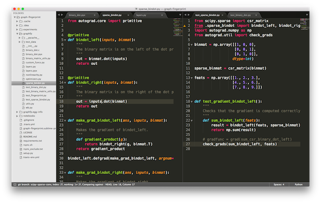

I attended the 2016 Boston Area Antibiotic Resistance Network meeting, held at the American Association for the Advancement of Science (AAAS). Here’s my bullet-point notes version of what went on.
Session 1: New antibiotic strategies and therapeutics:
In this section, scientists and group leaders presented novel ways of thinking about anti-bacterial treatment.
Session 2: Creating a sustainable ecosystem for antibiotic production.
In this section, representatives from finance, manufacturing, regulatory, and public policy discussed how they thought a sustainable ecosystem for producing antibiotics could be fostered.
Panel members:
Are there enough ideas in the pipeline?
Are there enough ideas in the pipeline?
Diagnostics?
Why is there not reduced antibiotic usage in agriculture?
New antibiotics are a bit like the different types of fire extinguishers (one for petrochemical, one for electrical, etc.). You only buy a new fire extinguisher if it is sufficiently different. New antibiotics have to likewise be sufficiently different.
What’s the one thing that has to be done?
Session 3: Entrepreneurship
Things to note:
Session 4: Diagnostics
Did you enjoy this blog post? Let's discuss more!
Yesterday I attended a very fruitful BAARN 2016 meeting. This was the fourth annual meeting, and the range of topics spanned the scientific (new technologies for treating and diagnosing) to economic (incentives for development of new antibiotics and diagnostic technologies) to medical (outlining the real unmet needs that doctors are facing). I learned a ton; the $100 registration fee was definitely worthwhile.
There were three things I took note of that I think could be translated over from the bacterial surveillance world to the viral surveillance world.
(1) Genomic and Phenotypic Surveillance
This one was a big take-home for me, given the research direction I’m hoping to pursue after grad school.
Genomic surveillance is the use of genome sequence to determine the evolutionary history and potential risk of a pathogen. In the bacterial world, genomic surveillance efforts are mostly concentrated on finding known antibiotic resistance genes.
Phenotypic surveillance involves actually experimentally testing a pathogen for some phenotype. In the bacterial world, this means testing a cultured isolate against a panel of drugs.
In my mind, these two are inseparable. Genomic surveillance will always be cheaper and faster to carry out, given the advances in portable sequencers; phenotypic surveillance is going to be rate-limited by biochemistry. On the other hand, only systematic phenotypic measurements can give us the necessary data to link genome sequence to phenotype. In my view, the function that connects genome/protein sequence to phenotype is complex enough that for pure surveillance (not scientific) purposes, machine learning models are probably the best tools to use. With tools like TPOT, it should be trivial to automate the selection of best predictive features and models. The tough part, then, is generating a gold-standard, epidemiologically relevant dataset.
(2) Incentives
Another interesting point that came out is the notion that antibiotic drugs are the only drug whose value depreciates with its widespread usage. The main factor at play here is the emergence of drug resistant bacteria. This makes it financially disadvantageous for companies to come in and invest in making new drugs.
One alternative incentive system that was brought up is best described with an analogy - fire stations. Taxpayers pay into a common pool of money, which funds fire stations and firemen. As opposed to paying firemen per fire that they put out, we pay them a fixed amount as a public good/insurance against fire disasters. Likewise, as opposed to paying drug companies per dosage of antibiotics that are sold, a better incentive may be to guarantee payment at (peer-/externally-reviewed) drug development milestones, in addition to a sum for maintaining an arsenal of drugs that could be stewarded when needed.
(3) Rapid Detection
Dr. Angela Caliendo (Brown University) brought up some really, really useful points during her talk, which I took note of in my bullet-point notes. Rapid detection was the point that stuck the most.
“Rapid” is a nebulous concept, so Angela’s talk helped bring some clarity here. For the physician (and by my own extension, front-line epidemiologist), the major unmet medical needs for countering infectious disease outbreaks are:
In each case, “rapid” means different things. To distinguish bacterial from viral infection, and to be most useful in guiding physician decision-making, “rapid” means within minutes, at the bedside, doable by a non-laboratory trained person. For viral detection, it has to likewise be within 15-20 minutes to be “rapid”. For bacterial detection, an hour or less is best, and for susceptibility testing, less than 6 hours is optimal.
Knowing these points really helps set the engineering constraints properly. Basically, any useful assay has to work within minutes, be operable by a non-laboratory trained person, and accept blood/swabs as input. Solid phase (bio)chemistry is going to be really important.
Synthesis/Thoughts
My current projects are geared towards tying viral genotype to phenotype, with the goal of predicting a virus’ pathogenic risk profile from its sequence. Because sequence data is the input, and not blood/swab samples, I won’t be playing in the rapid detection space. However, I think the tools I hope to develop will play well in the susceptibility prediction/determination space.
With the MinION sequencer, the sequence of a virus can be determined within one day of isolation. Now, the sequencer’s 60-85% accuracy (this number comes from a 2014 popular news report, and a recent 2015 paper supports this number) isn’t up to the point where single point mutations can be identified accurately, so I think it’s best used for viral species/subtype identification (e.g. in the case of influenza). When the accuracy moves below 1 error in 10,000 base calls (and I’m confident it will given the efforts of scientists and engineers to make this happen), that’s when I think that the susceptibility prediction tools I’m trying to develop will come in handy; common viral genomes sizes are on the order of thousands of bases. The key (and hard part) here is investing in good measurement data on which models can be trained that map sequence to phenotype.
Did you enjoy this blog post? Let's discuss more!
I have found that I most successfully focus when I have my scribble book by my side. Jotting down what I'm going to do next on the notebook focuses my mind more than jotting it down in Evernote, which is done digitally. I think it's the combination of having it recorded on a companion "screen" to my MacBook Air.
Did you enjoy this blog post? Let's discuss more!
I recently was asked by Dr. Hugo Bowne-Anderson (a really chill guy, who probably would insist that I drop the "Dr.") to contribute some of my thoughts on what makes a great data science workshop. Having been on both sides as an instructor and a learner, here's some of my thoughts.
What distinguishes a Data Science Workshop from a Data Science talk or lecture?
I think the distinguishing mark of a data science workshop is that the instructor will make sure that there is hands-on coding involved. The only exception to this that I have experienced was in Bang Wong's workshop on data visualization, where we did group discussion instead. In both cases, participant involvement is very important.
What are the 3 most important qualities for a great Data Science Workshop to have and the 3 most important for it to NOT have? Why (one sentence on each quality)?
My top 3 important qualities are:
It should be evident that the opposites of the above should be avoided, but I’ll put out a few ideas of common good teaching practices that might (paradoxically) be best avoided in a workshop setting:
How do you avoid losing your audience in the 1st 5 minutes?
The most important thing I learned was to keep the energy high. My verbal and body language have to show that I'm excited to share my knowledge, thrilled to meet everybody present, and eager to continue the conversation afterwards. The best instructors that I’ve seen, such as Allen Downey, do this. Following that, I think it’s important to set expectations, to clarify what will and won’t be covered.
What tools/software/resources do you use when giving a Workshop? What tools/software do you ask your attendees to use?
The topic I teach the most has been network/graph analysis fundamentals, using the NetworkX API to introduce these ideas. For this, I use Python (and the scientific Python stack, in particular), the Jupyter notebook, and git on GitHub. I like using the RISE plugin for Jupyter, which instantly turns my code and markdown cells into slides that I can advance through. Everybody complains about font sizes being too small; RISE solves that instantly for the notebook, and I can spice up the theme by changing the CSS.
Apart from that, where possible, I try to make use of sticky notes. It’s something I picked up from my Software & Data Carpentry instructor training. Green stands for "I'm good to go!", while red stands for "I'm in need of some help."
What would you like to find in a “How to teach a great Data Science Workshop” article?
I’d like to see real feedback from students about their instructors. Nothing beats having direct feedback from the participants. I’d also like to see a list of questions that instructors should ask themselves (or have a coach-like figure ask them) after each workshop, so that we can train ourselves to focus on the most important aspects of teaching.
Did you enjoy this blog post? Let's discuss more!
When writing code, it’s often a great idea to write tests in parallel. Today I experienced how important it is to have a split window. I write code on my left pane, and I can immediately set up the corresponding test on the right pane. Just as such.

I used to not write my tests immediately, and I’m right now suffering that technical debt in parts of my code. That was before learning that Sublime Text 3 allows me to do split window panes (with the shortcut key Cmd+1/2/3/4/5). Now that I know it, writing tests in parallel with my code is much easier. Form indeed informs function.
Did you enjoy this blog post? Let's discuss more!